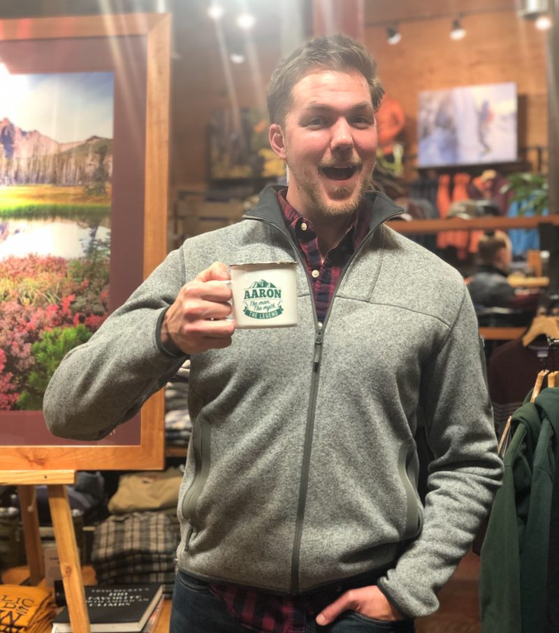

Customer Success Leader
Ten years in SaaS Customer Success, most of it doing both jobs at once: holding a valuable book of business and building the operations for the team.
Selected metrics
CBT Nuggets, Senior CSM, 2019–2023 · SMB upsell growth 2020–2024
Nailing that first stretch sets the trajectory for everything after it. Most churn that shows up in month nine was decided in month one.
Knowing what value actually means for a given account is the job. A health score that treats them all the same is measuring your convenience, not their outcome.
The unspoken need and the unasked question are usually where the expansion is, and where the risk is. Neither one shows up in a ticket.
When the data I needed did not exist, I wrote the collector myself. That instinct has occasionally put me outside my job description, which I have never regretted.

Former coach turned Customer Success leader. I grew up with the industry as it took shape and found my calling in delivering meaningful moments for my clients and driving revenue through product adoption.
I've had the privilege to operate in all CS roles: individual CSM carrying a book of business, the team manager who was a player and coach, and a hybrid CS and RevOps role. I'm a natural connector, the guy at the table who looks to get everyone involved, and I enjoy the blend of people, relationships, strategy, data, and innovation that Customer Success affords.
Aaron Grusi · Customer Success Leader